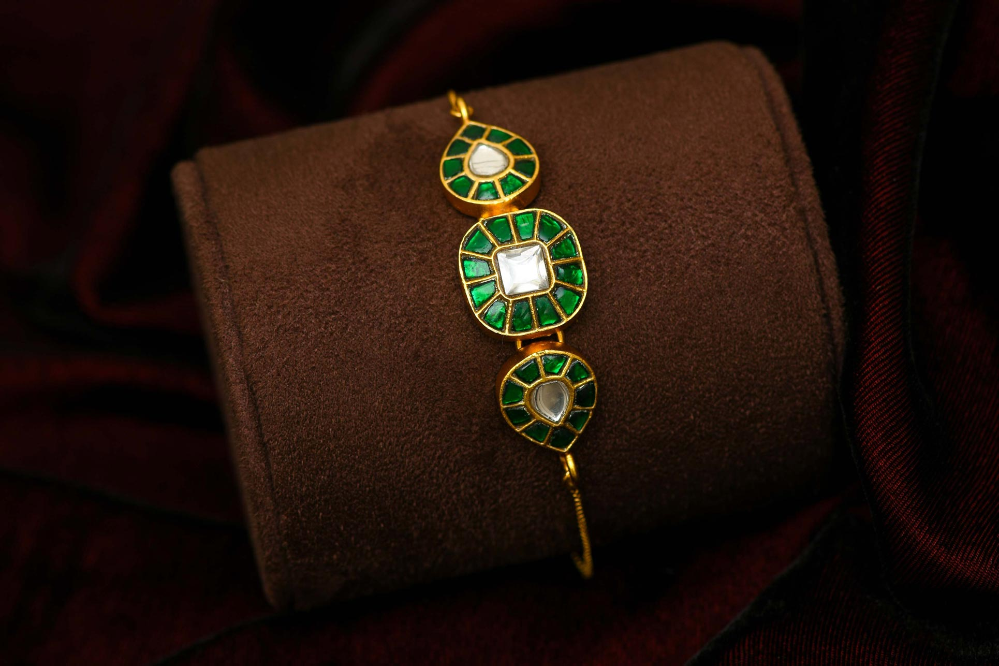
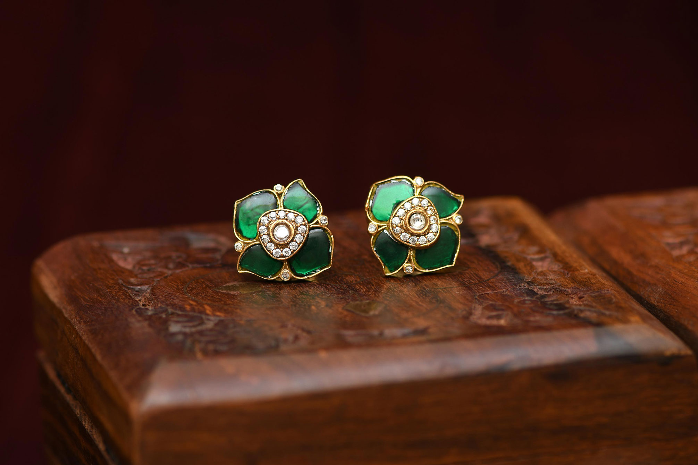

When it comes to jewellery photography, detailing, styling, and composition play a major role in elevating the product. Every background, surface, and light source contributes to how the jewellery is perceived. In this project, I explored multiple setups for bracelets and earrings to highlight their design and character.
For the bracelet, I chose a maroon velvet cloth as the background to give a soft, silky feel. I placed the bracelet on a maroon-colored pillow bangle cushion to match the theme. The dark setting was intentional — it helps to draw attention to the jewellery itself, without distracting elements around it.
For the studs, I used the same maroon velvet cloth as the background but placed a pair of colorful studs on a brown jewellery box. The textured background combined with rich tones helps stone colors pop beautifully. This setup was styled to give a regal, moody look while still keeping the focus on the jewellery.
Both images were shot using a soft lighting setup to maintain highlights on the stones and edges of the jewellery. The goal was to create a premium, elegant feel with minimal distractions — letting the craftsmanship of the pieces shine through the frame.